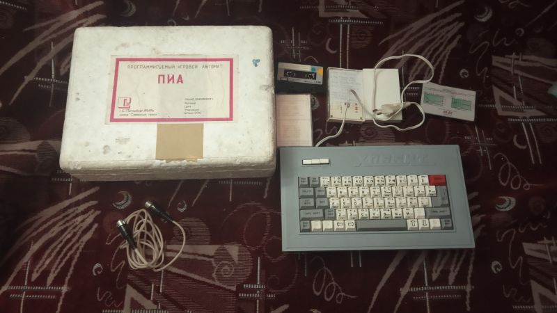

| Годы производства | Нет точной информации, вероятно конец 1980-ых - середина 1990-ых |
| Производился | Завод "Северный Пресс" г. Санкт-Петербург |
| Процессор | Zilog Z80 |
| Частота | 3,5 МГц |
| Скорость | 100% |
| ОЗУ | 48КБ |
| ПЗУ | 16КБ |
| Преемущества | Хорошая клавиатура, RF-видеовыход, неплохое качество сборки, встроенный блок питания, кнопка инвертирования сигнала, два гнезда для джойстика, удобная клавиатура. |
| Недостатки | Видеовыход RGB под разъем DIN-7, RF-вывод только черно-белый. |
ПИА Хоббит
ПИА Хоббит или официально "Программируемый Игровой Автомат «Хоббит»" - Советский/Росскийский клон ZX Spectrum. Аналогично более позднему клону - "Роби" производился на заводе "Северный Пресс" в г. Ленинград/Санкт-Петербург. Экземпляр представленный в нашем музее имеет номер 3967 произведён не раньше мая 1993 года.Комплектация доставшаяся мне была скромная:
Пенопластовая коробкаСам компьютер
Кабель DIN-7
5 Кассет с программами и играми
Основная информация:
Клон изначально разработан советско-швейцарским предприятием под названием "Хоббит", однако же клон представленный здесь - это уже третья его ревизия, производившаяся заводом "Северный Пресс". Клон сделан на основе оригинального Zilog Z80, а также обращало на себя внимание то, что некоторые микросхемы в клоне - импортного производства.Компьютер имеет сероватого цвета корпус снизу, и тёмно серый на верхней крышке.
Кнопки на передней панели:
Сеть - Кнопка включения компьютера.
Видео - Для инверсии картинки, в случае неправильного подключения синхросмеси и общего каналов.
Сброс - Аппаратный сброс.
Нужно сказать, что существует две версии клона - с красными кнопками и с белыми, в нашем случае версия с белыми.
Разъемы:
ТВ - Разъем антенного входа для подключения с помощью стандартного кабеля RF к телевизору.МАГ - DIN7 - Разъем для подключения к магнитофону для дальнейшей загрузки игры с ленты.
ДЖОЙСТИК 1 - DIN7 - Разъем для подключения джойстика, неизвестно правда какого именно типа.
ДЖОЙСТИК 2 - DIN7 - Разъем для подключения джойстика, неизвестно правда какого именно типа.
RGB - DIN 7 - Разъем для подключения к цветному телевизору.
Компьютер имеет сразу два варианта подключения к телевизору, один из которых использует обычный RF-провод что облегчает подключение в случае невозможности сделать кабель RGB-подключения.
Клавиатура стандартная для советских копий ZX - 58-кнопочная.
ПЗУ изменено - при включении компьютер на синем фоне желтыми буквами пишет сообщение - PERSONAL COMPUTER взятое в рамку.
Звук выдаётся на телевизор, встроенного динамика нет.
В комплекте имелось 5 кассет, в т.ч. и та, которая шла в комплекте с компьютером, и она полностью совпадала с кассетой шедшей в комплекте с клоном РОБИ, которую вы можете посмотреть тут(ссылка кликабельна).
В комплекте также была коробка из пенопласта с наклейкой на крышке в которой и лежал сам компьютер.
И имелся также DIN7 провод, который вероятно предназначался для подключения к телевизору.
Неизвестно какую совместимость с программами имеет данный клон, поскольку часто происходит сброс сразу после загрузки программы в главное меню. Тест не выявлял никаких ошибок, но вероятно имеется неисправность в оперативной памяти. Вполне вероятно клон будет либо заменён на более рабочий, либо данный дефект на этом экземпляре будет исправлен. Информация будет обновляться.